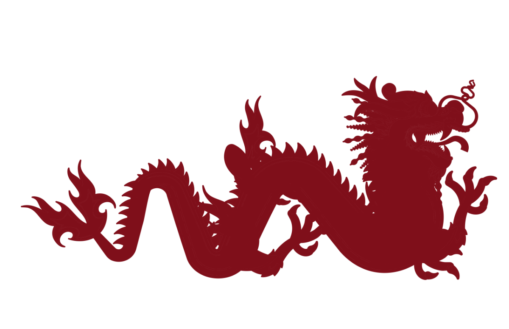
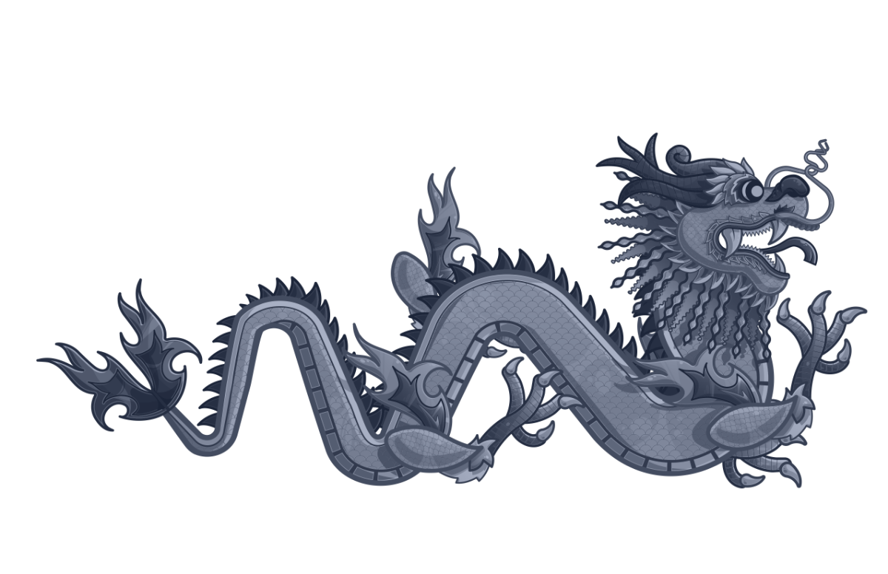

Silueta plana · wine sobre papel más on-brand

Silueta plana · cream sobre navy más on-brand

Duotono wine · conserva detalle más ruidoso

Duotono navy · conserva detalle más ruidoso
Generado a partir de tu PNG. Dos enfoques: silueta plana (forma limpia, máximo on-brand) y duotono (conserva escamas y detalle, mono-color). Mirá cuál te convence — abajo te digo la vía para que quede impecable.



Lectura honesta: la silueta plana funciona como motivo de marca (forma clara, una sola tinta), pero un dragón es muy detallado y una silueta hecha desde PNG pierde definición fina en la cabeza. Para un resultado realmente limpio hace falta el vector (tu archivo .ai → exportado a SVG), o un re-trazo a mano alzada.